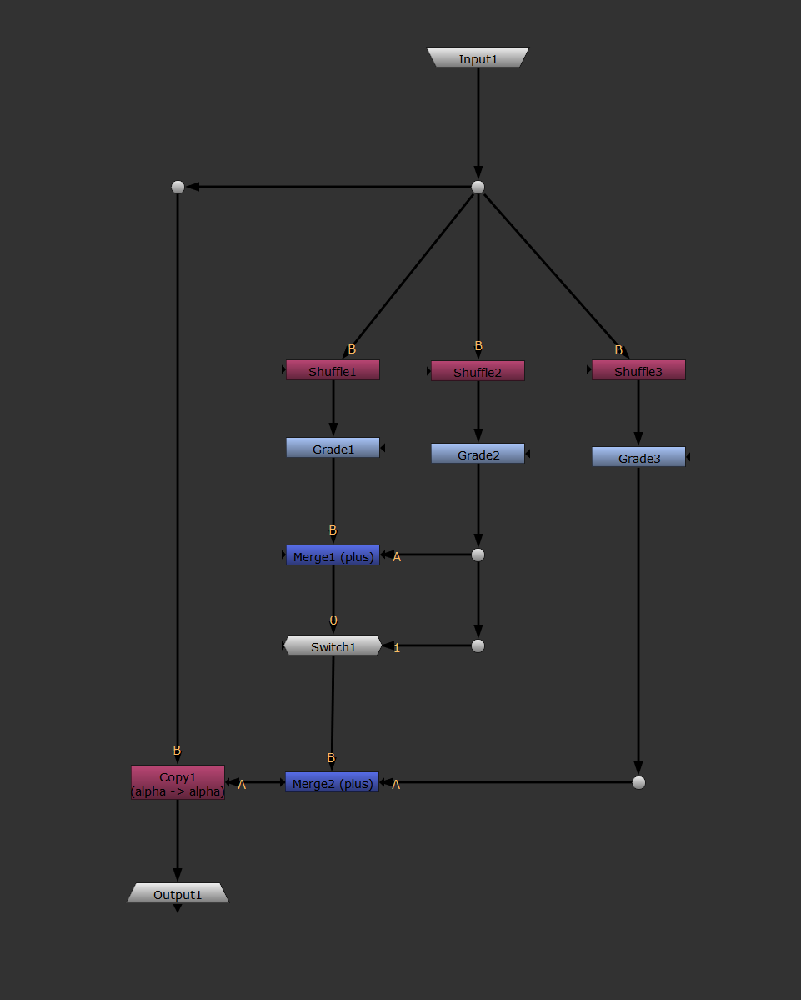
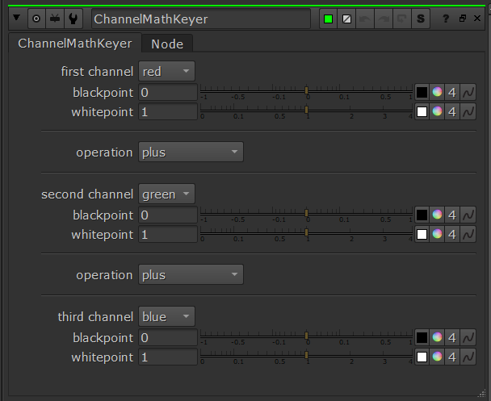
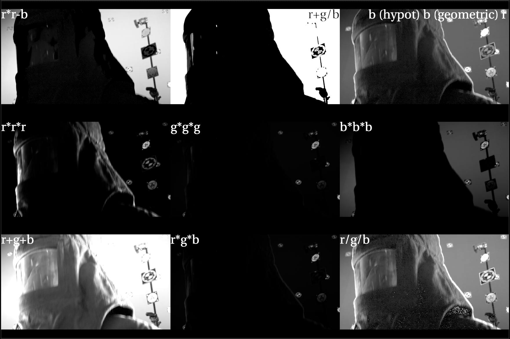

---

layout: default

---
<section class="helios_breakdown">
	<h2 class="portfolio_headings">Channel Math Keyer</h2>

	<p>The ChannelMathKeyer uses a simple setup of Shuffle, Grade and Merge Nodes to apply various operations between the rgb channels. Similar to default keyers, it is then possible to adjust the blackpoint and whitepoint to refine the key further. The gizmo encourages experimentation and allows ease of use when combining the rgb channels using different merge operations.</p>

	<div class="helios_image">
		
		<figcaption>Node Graph showing the internal setup of the gizmo.</figcaption>
	</div>

	<div class="helios_image">
		
		<figcaption>Properties of the keyer</figcaption>
	</div>

	<p>The following channels are able to be selected in the dropdown box: "red", "green", "blue" and "none." When set to "none", the nodes in the internal node graph will disable accordingly using Python code to allow the gizmo to function properly.</p>

	<p>In the images below it is possible to see a comparison of the various operations between different combinations of channels.</p>

	<div class="helios_image">
		
		<figcaption>Original Plate</figcaption>
	</div>

	<div class="helios_image">
		
		<figcaption>The contact sheet above compares the various effects of combining diffrent channels and adjusting their respective blackpoint and white point values</figcaption>
	</div>

	<h4>Downloadable Files</h4>
	<p>The following is the gizmo/group which can be downloaded, then copy and pasted in Nuke for quickstart use:</p>
	<p><a href="../assets/gizmos/channel_math_keyer_v001.gizmo" download>ChannelMathKeyer</a></p>

	<p>Below is the Python code used to affect the internal nodes according to changes made to the gizmo:</p>
	<p><a href="../assets/python_scripts/channel_math_keyer_v001.py" download>ChannelMathKeyer.py</a></p>

	 
</section>
